2010
Capodanno a Ovindoli
05-01-2010
Eccoci ad Ovindoli....ma uffi non c'è nemmeno un pochino di neve! :(
allora passeggiamo con la piccola Alessia
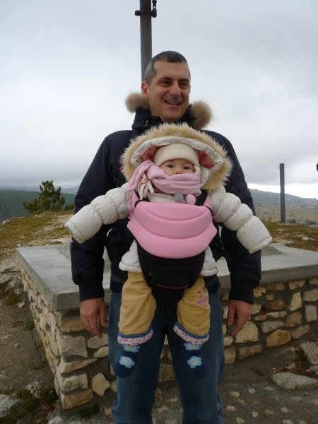
e ci arrampichiamo in cima al paese con M e Mara

ma tutto insieme il cielo si copre di nuvoloni, la temperatura scende e inizia a nevicare...evviva!!!
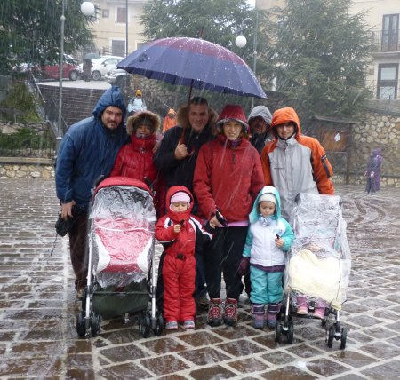
proviamo anche a fare una discesa con gli slittini...ma che bufera di neve!

e io mi diverto a mangiare la neve come quando ero piccola!
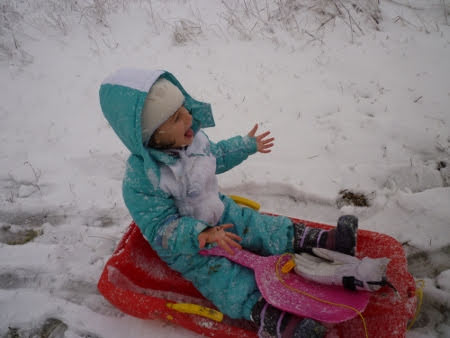
arriva anche Morgan che è felice come un matto!

e c'è anche Max che sostiene zia in versione Dr. House!
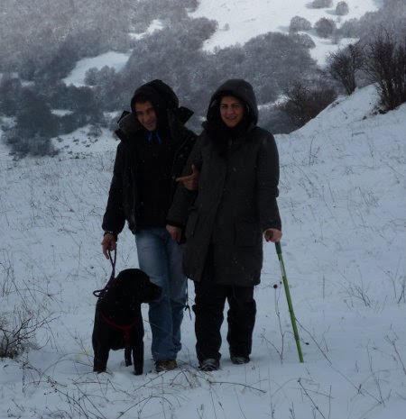
Insomma nevica di brutto e noi ce ne stiamo al caldo in casa a giocare
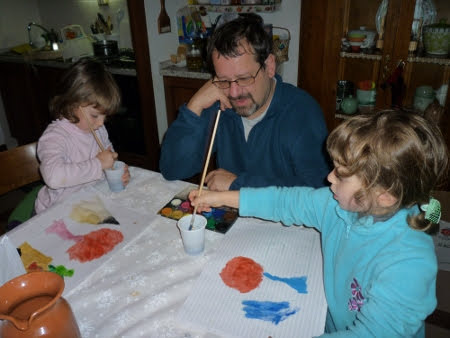
mentre Marghe dà il tormento a Morgan ribattezzato Ciucciu

Alla fine smette di nevicare ed esce il sole! Margherita tocca la neve per la prima volta!
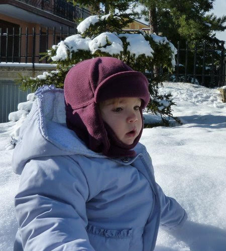
e anche Raymond, Hubel e Ivan vengono a vedere per la prima volta la neve (in India, in Kerala, non c'è )
e ad aiutarci a fare il pupazzo di neve
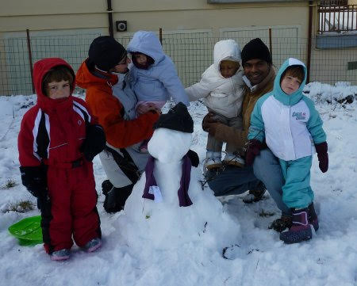
ma Sofi ed io gli mangiamo le orecchie!

andiamo anche in cima alla montagna con la cabinovia!
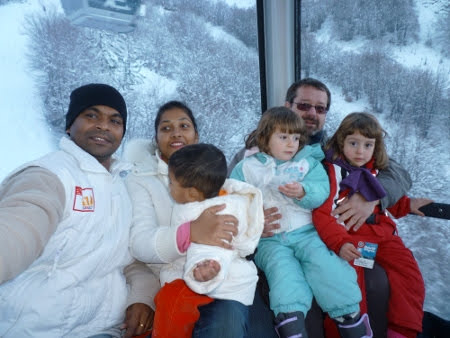
poi domenica esce addirittura un bellissimo sole e Sofi ed io ci facciamo una corsa sulla neve con gli slittini
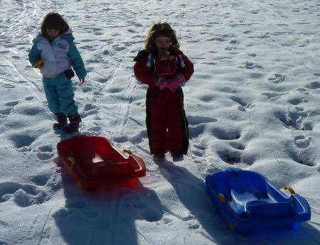
BUON 2010 A TUTTI!
Lo so, lo so ... non si dovrebbe, ma...
19-01-2010
a papà piacerebbe tanto che fossi un'artista, e allora io faccio del mio meglio!
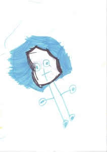
Pic-nic in decollo
25-01-2010
Oggi siamo stati a Norma a fare un pic-nic in decollo, ma non volava nessuno, anzi è arrivato pure un elicottero!Che bello l'abbiamo visto da vicino quando è atterrato!
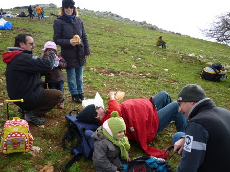
poi siamo stati a fare una passeggiata a Sermoneta e Marghe ha spiaccicato tutto il gelato sul giacchetto di P!
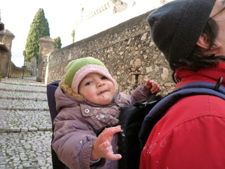
Siamo due smorfiosette!!
28-01-2010

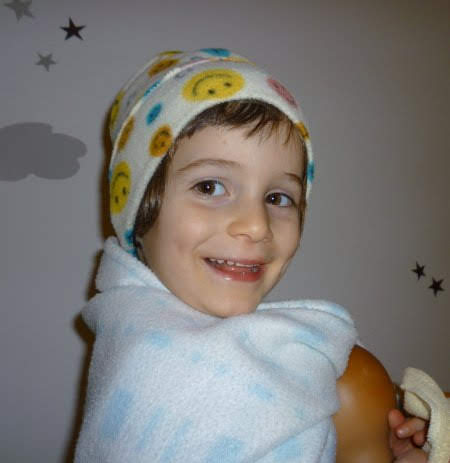
Matrimonio di Frabizio e Sara
01-02-2010
Oggi Marghe ed io ci siamo preparate per andare al matrimonio, ci siamo anche vestite uguali uguali, i vestiti li ho scelti io!!
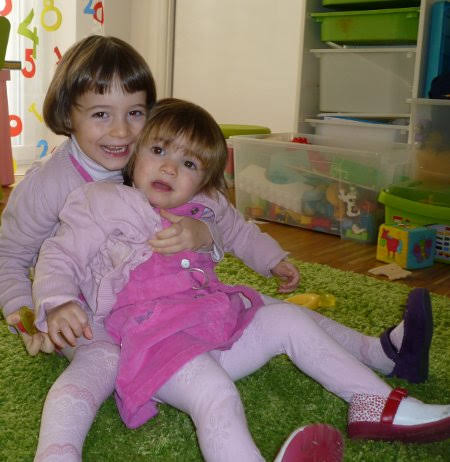
La sposa era tutta vestita di bianco e molto bella! (e anche lo sposo)
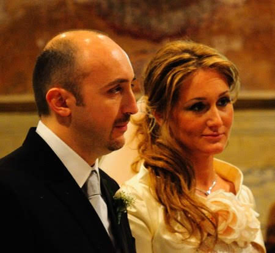
e dopo siamo stati tutti insieme al ristorante!
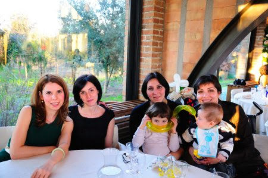
Tutto bianco risveglio
13-02-2010
Guardate un po' il nostro giardino ... [

che bello tutto bianco!

Speriamo che regga coì pomeriggio andiamo a fare scivolarella!!!
Carnevale con la varicella
17-02-2010
Niente festa di carnevale a scuola nè in giro per roma mascherata....ma in compenso un pò di bollicine di varicella! Però nonna Franca mi ha fatto un bellissimo vestito da principessa...tutto rosa!!!
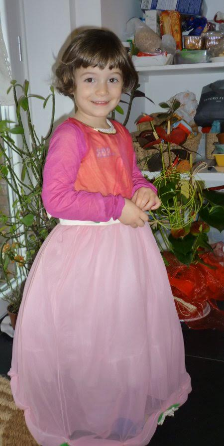
...e poi stare a casa non mi dispiace per niente... gioco e gioco e faccio la buffona!!
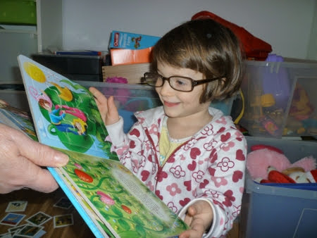
La festa di Carnevale
17-02-2010
Oggi all'asilo di Marghe c'è stata la festa in maschera! Erano bellissimi tutti i bimbi!
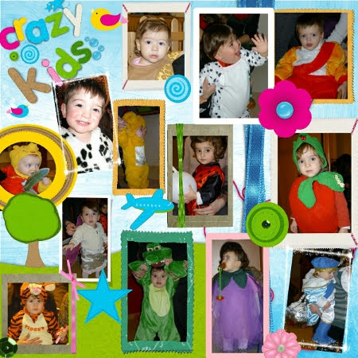
e c'era anche il mago!
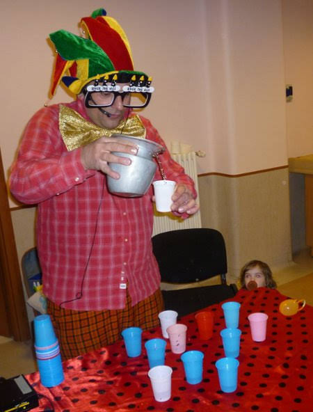
con una micro assistente/curiosa nell'angolino!!! :)
Giornata di sole e di...
22-02-2010
.... biciclette
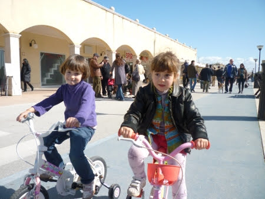
... succhi di frutta
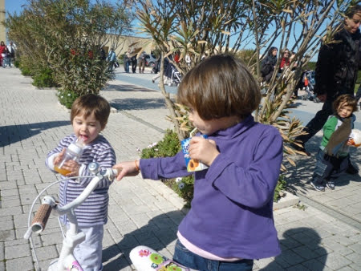
... palle
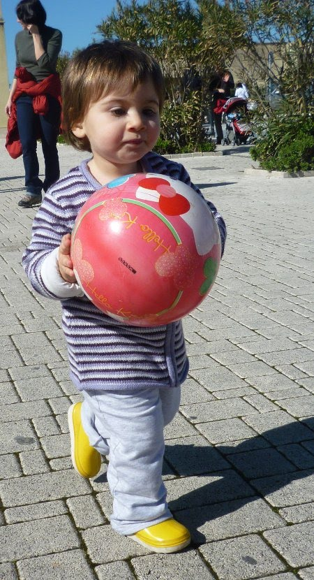
... coccole di nonno
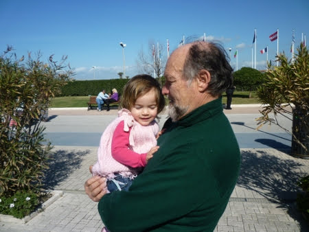
... adesivi sulle scarpe

... salti sul tappetone elastico

e di mamme che esagerano!
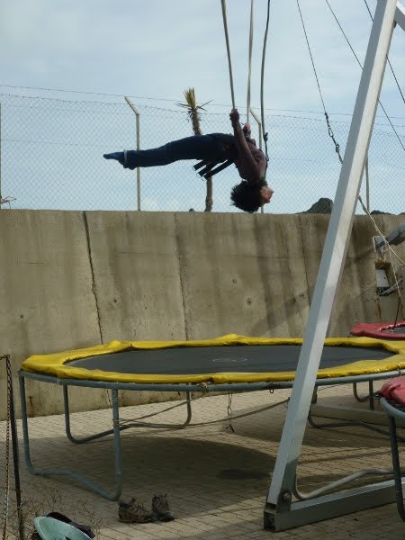
... insomma proprio una bella giornata!!!
Anche Marghe con la varicella!! :(
25-02-2010
Puntuale come un orologio ...dopo 15 giorni anche Marghe attaccata dal virus!
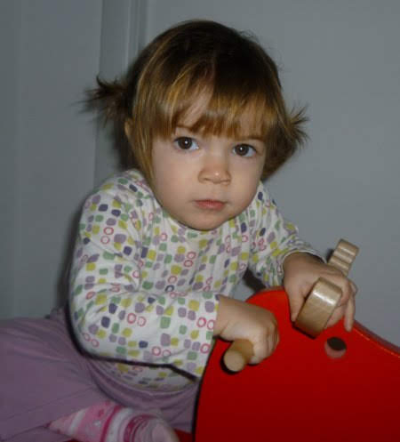
.. me lo leggo da sola...
05-03-2010
Matilde: 'Papy mi prendi il libro delle favole?'
P: 'Si, vuoi che te ne leggo una?'
Matilde: ' No, me lo leggo da sola...'
3 minuti dopo.....
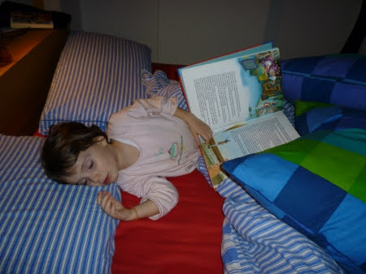
Al mare
08-03-2010
Finalmente il sole dopo giornate di pioggia e dunque... via al mare a goderci la giornata!
Però per arrivare dobbiamo superare un ostacolo, ci fermerà? ... macchè, caterpillar è incontenibile.
Però che faticaccia, ora ci riposiamo un po'!
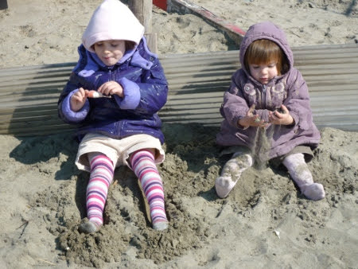
Compleanno di Caterina
17-03-2010
Auguri cuginetta!!!
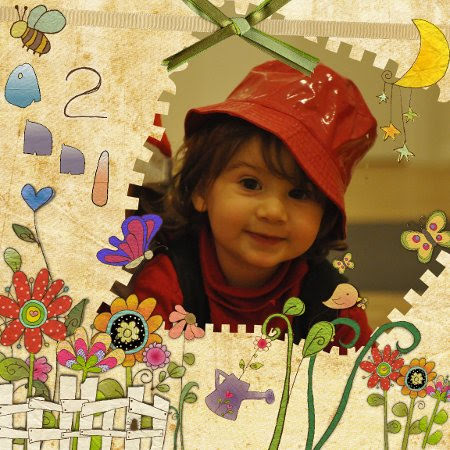
Buon compleanno papy!
28-03-2010
Le tue bimbe :)
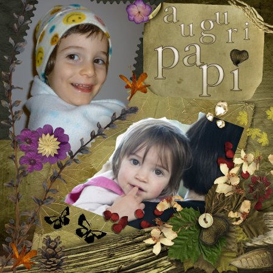
Compleanni
29-03-2010
Tra marzo e aprile si festeggiano tanti compleanni, e allora abbiamo deciso di fare un bel pizza party a casa di Mara e Lorenzo.
Ecco tutti i festeggiati davanti alle torte
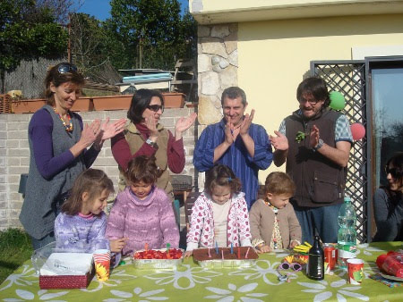
mentre Margherita si dedica alle sue passioni: la bici e la pizza!
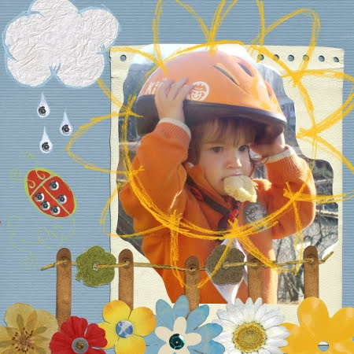
e le bimbe grandi ...

Macarone ....
05-04-2010
... m'hai provocato e io te distruggo ... io me te magno!
Una Margherita a Roma!!!
Colazione di Pasqua
05-04-2010
Beh da buoni marchigiani a Pasqua si mangia... salame, pizza di formaggio, pizza dolce, colomba uova di Pasque e uova sode, magari benedette, eppoi si fa a scoccetta ...
... è un gioco che si fa durante la colazione di Pasqua. I due contendenti urtano le proprie uova. Quello che si rompe perde... P ha perso ;-)
Pic-nic d'aprile
26-04-2010
Nicole ci ha invitati a questo bel pic-nic al parco della Pace. Sono venuti anche Lara e Tommy.
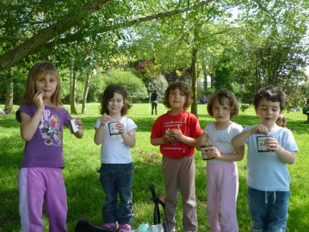
Ci siamo divertiti moltissimo, con le biciclette, gli aquiloni
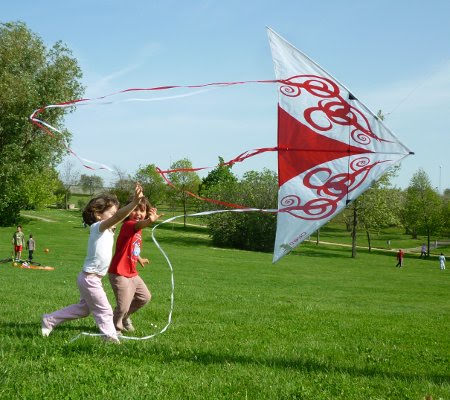
Marghe era sempre in giro per i prati...
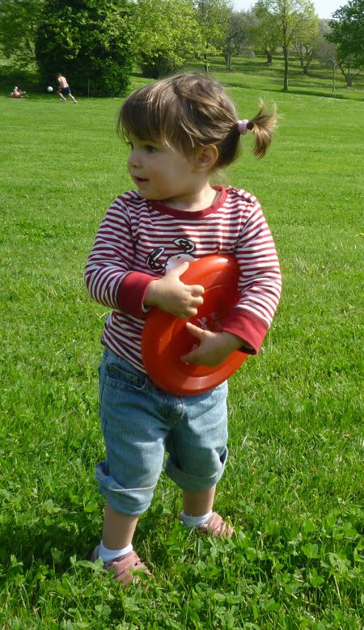
Auguri mamma
15-05-2010
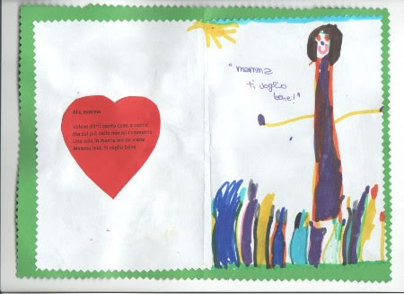
Quando ci vediamo?
20-05-2010
un saluto da zia Giorgia e Morgan alle due monellette...
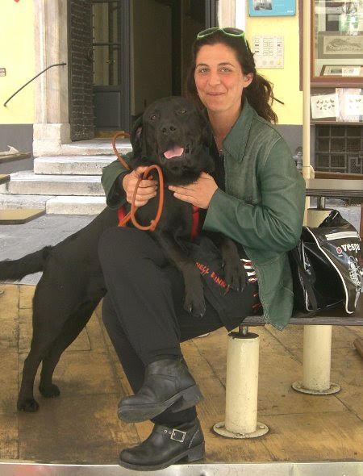
Battesimo!
24-05-2010
una giornata speciale per la piccola alessia e i suoi genitori!
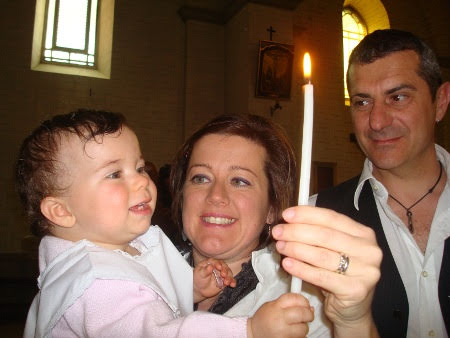
e poi tutti a giocare!
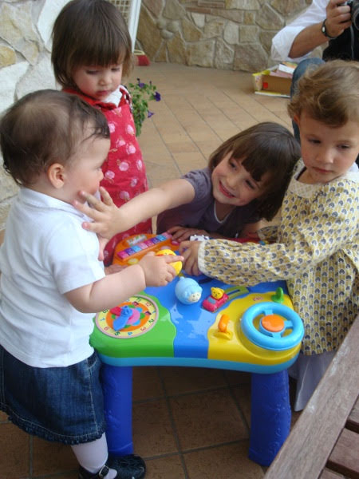
Margherita. 'mumble mumble .... anche io lo voglio questo tavolino...'
pedalando pedalando....
24-05-2010
ci siamo fatti mezzo giro del lago di castello!! :)
forza bimbe che ci aspettano tante belle passeggiate in bici!
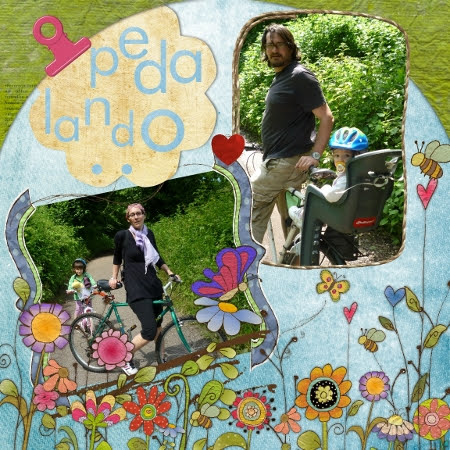
Io e Pedro
24-05-2010
è proprio vero.... quella per i cani è una vera passione!
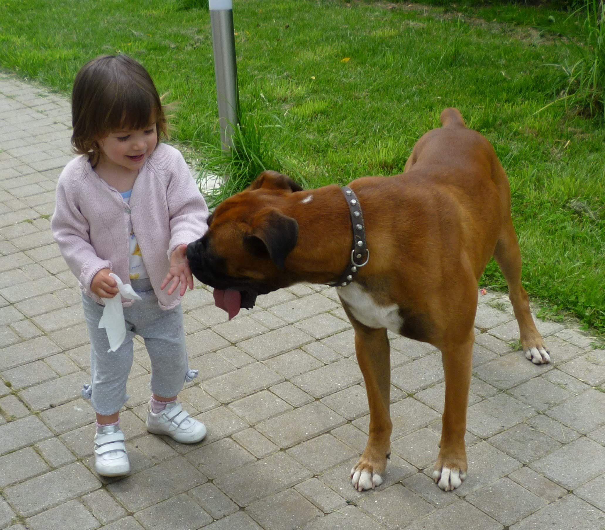
Compleanno di Ivan
25-05-2010
per i due anni di Ivan siamo stati ad un Indian Party!!

abbiamo giocato e mangiato tante cose buone. marghe e il festeggiato sembrano molto affiatati!
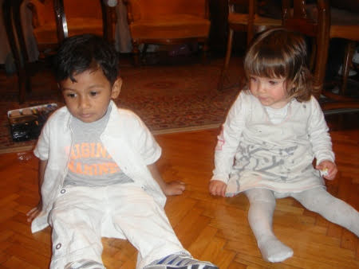
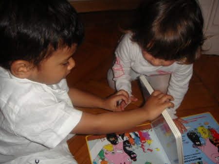
Auguri piccola Alessia
25-05-2010
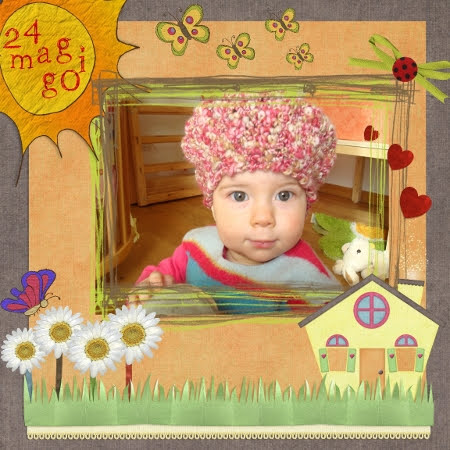
2° anniversario
01-06-2010
Auguri M&P
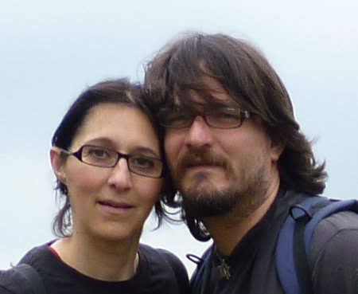
Ponte lungo ...ligure!
04-06-2010
Finalmente partiamo per andare da zia Giorgia e Morgan !! 'Evviva' come dice Margherita!!! Eccoli che ci aspettano..

al povero Morgan noi piccoline abbiamo dato il tormento... portandolo a spasso
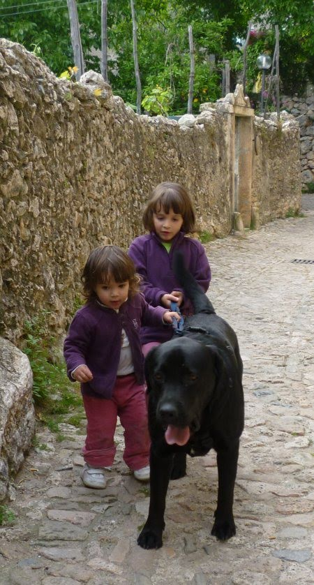
abbracciandolo sempre...
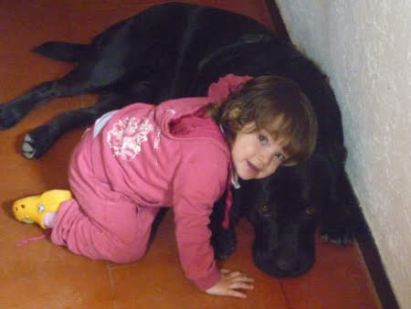
usandolo come cavallo... anche a colazione...
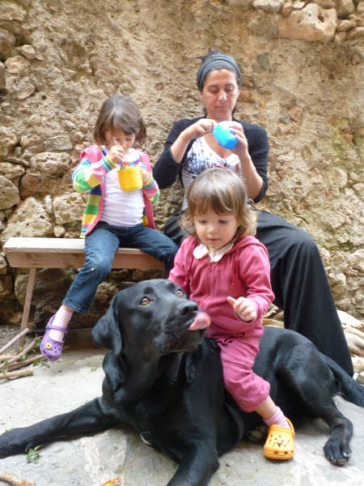
ma lui si fa fare tutto.... senza lamentarsi, ma dando solo grandi leccate!!
Matilde si è rivelata una fantastica dog sitter, ha portato anche Carmy a spasso nel bosco
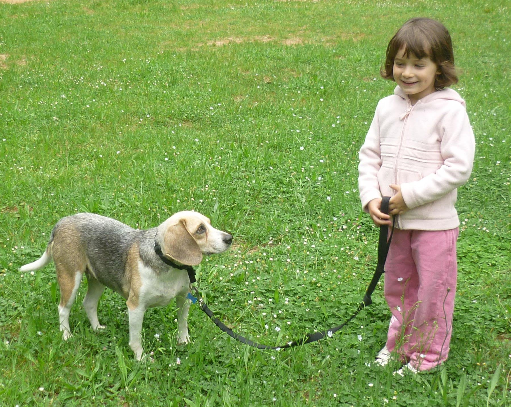
ed è anche una brava camminatrice...mentre Marghe se la spassa nello zaino con papy!
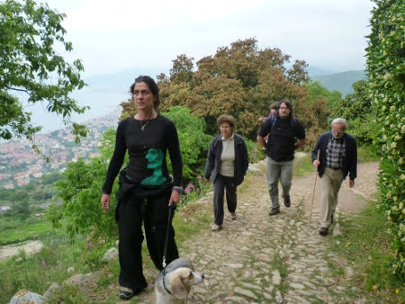
Poi è uscito il sole e ci siamo concessi i primi veri giorni di mare di quest'estate, con ADDIRITTURA un bagno!!

e tanti secchielli di sabbia!

Sulla via del ritorno siamo andati a fare un bagno caldo alle terme Calidario di Venturina...che bello!!!
insomma....finalmente è iniziata l'estate!!!
Finalmente ... ronzi!!!
07-06-2010
Dopo un lungo inverno (e primavera)
di pioggia finalmente si riprende il camper!! Meta Sabaudia, dove splende il sole e Marghe ed io ci divertiamo sulla spiaggia.
e nella piscinetta d'acqua calda!
Alla fine la sera siamo stanche e un pò bruciacchiate dal sole! Andiamo a cena da Mimì e Lulù.
Domenica invece un altro pò di mare con le cuginette Ludovica e Lucrezia e poi tutti alla festa di Alessia!!
Con tanto di bagno in piscina
foto di gruppo sul prato
relax e chiacchere con le amiche
e torta della festeggiata!
Un papà importante!
09-06-2010
Oggi papy è stato premiato per un suo progetto e ha anche incontrato il presidente Napolitano al Quirinale ... quando l'ho visto gli ho detto 'Papy ma come ti sei vestito?' ...non sono abituata a vederlo così elegante...ma era bellissimo!!
La mia prima gita scolastica!
10-06-2010
Che emozione (più per M&P ovviamente)
oggi la mia prima gita al mare con la scuola!
Tutti per mano e via...
sul pullman :)
Festa della cultura a Garbatella
14-06-2010
Dovevamo fare un bel we al mare e invece Marghe sta a casa con la tonsillite e le placche! Poverina! Così io e M andiamo alla festa della cultura che ha uno spazio bimbi in una delle piazzette più belle della Garbatella. Ci sono tantissimi giochi in legno ma a Sofia e a me piace tanto questo gioco da tavolo...

i tappetoni per saltare, il teatro dei burattini, i mimi, e l'angolo creativo (strano eh? :)
)
dove abbiamo colorato un sole fatto con un bicchiere di plastica e un polipo fatto con la bottiglia.
Fine anno: festa all'asilo
17-06-2010
All'asilo di Marghe hanno organizzato una bellissima festa di fine anno! Tutti i genitori e i bambini sono stati invitati a cena....

... nella terrazza festosamente addobbata.
Abbiamo gustato le prelibatezze del mitico cuoco Angelo e la magnifica organizzazione di tutte le maestre e lo staff insieme agli altri genitori
Noi bimbi invece abbiamo giocato...chi sulle molle
chi arrampicandosi...
E' stata proprio una bella serata. Le sorelline ringraziano!
Festa di fine anno: Matilde e Stella
18-06-2010
E questo primo anno di scuola materna è finito! Festeggiamo insieme a Stella al parco giochi, tra giostre
piscina di palline
auto scontri

mongolfiere
tazze di caffè ruotanti
e infine la tortaaaaa
"Buona la torta vero nonna?"
Ponte di fine giugno
03-07-2010
Non ci siamo fatti mancare niente! Un pò di mare a Pescia ... al Chiarone
qualche gelato per rinfrescarsi
un pò di lago di Bolsena con le amichette Anna e Nina
e allegri pranzetti
e infine le terme con nonno Gianni
proprio un bell'anticipo di vacanze!!!
Al mare a san felice
13-07-2010
... in vacanza con i nonni, Caterina e Leda ...
tanti giochi e pasticci
e infine i lati B!

Sicilia....
01-09-2010
Mamma, Marghe ed io ci siamo tagliate i capelli corti corti e via... si parte per le vacanze!

prendiamo la nave per la sicilia con Ronzinante! E finalmente siamo da Annagloria....subito a mollo nella loro piscina! Tutti insieme!!!
Giochiamo e facciamo tante merende 'zozze'!
Siamo andati sull'Etna, in cima al cratere

e ad abbuffarci come al solito al Frutteto di Efesto! C'erano anche zia Nuccia, zio Nello e il cugino campione di rana Andrea!
Poi ho fatto il bagno di notte ... era un pò freddino!!!
E prima di lasciare questa bella terra siamo andati a Etnaland, un parco gioco acquatico dove mi sono divertita un mondo a nuotare, fare gli scivoli e girare con la ciambella nel fiume con la corrente insieme a mamma! Anche a Marghe piace moltissimo l'acqua!
.... Calabria .... Campania.....Abruzzo....
03-09-2010
Lasciati gli amici il nostro viaggio prosegue per il sud Italia con Ronzinante.
Ci fermiamo a Capo Vaticano dove c'è un bel mare con i cavalloni e gli scogli!
Poi un pò di relax e di fresco sulla Sila
e un giro del lago di Cecita in bici
abbiamo comprato i funghi e li ho puliti tutti io!!
Poi siamo andati a Praia a Mare. Margherita ancora non ha capito che l'acqua di mare fa male...e la beve continuamente!

A me invece piace nuotare come un pescetto, andare sott'acqua e fare il morto a galla!
Ho proprio un fisico da spiaggia vero?? :)
Marghe invece un pò più da panzerotto!!
Abbiamo fatto amicizia con una simpaticissima famiglia di udine!
Poi siamo stati a Capo Palinuro e a Marina di Camerota a trovare altri amici.
ci piace giocare nelle pozze d'acqua che si formano sugli scogli e cercare i granchietti e le conchiglie
Ultima tappa di mare sull'altra costa è stata Lido di Casalbordino .. spiaggione di sabbia e acqua bassa dove ci siamo divertite a correre nell'acqua a fare i tuffi e a giocare con il materassino con M!

.... Marche!
05-09-2010
Un pò esauste da questa vacanza itinierante, la nostra meta sono le Marche, dove ci aspettano zii, nonni, la bionna Maria, Cate e tantissimi amici!
Abbiamo fatto tantissime cose: passeggiate al piscibetto
con merende lungo il fiume e in cima al monte

tante bolle di sapone
tante risate con Cate e Saretta
e poi è venuto a trovarci anche Raymond!
Grazie papy che ci hai sopportate, come solo tu sai fare, mentre mamma era al lavoro!
I miei primi 4 anni!!!
08-09-2010
WE di settembre
22-09-2010
Ancora fa caldo e si va al mare, a volare a Norma

e in campagna
I miei primi 2 anni!!!
24-09-2010
Festa M&M 2&4 !!
27-09-2010
M&P hanno organizzato per me e Marghe una bellissima festa a casa! Per l'occasione il terrazzo è stato trasformato in un parco giochi dove tutti i bimbi si sono divertiti!
P ci ha anche dato il permesso di infilare il dito nella torta!!!
P & friends for Africa
04-10-2010
Ormai tanto tempo fa, Papà e i suoi amici hanno cominciato a raccogliere dei soldi per beneficienza... però per mille motivi ancora non li hanno donati.
è ora di muoversi!
Fino ad ora abbiamo raccolto 1241 euro, l'obiettivo è 3000 euro per donare attraverso il progetto Acqua dell'AMRE
un pozzo in Africa, che verrà intitolato al papà di Enrico .
P raccoglierà fondi fino al giorno del suo compleanno (il 27 marzo del 2011)
, quando diventerà uno splendido quarantenne, poi faremo immediatamente insieme la donazione. A proposito, nessun regalo per P, ma mettete da parte un po' di soldini per questa iniziativa che poi raccoglieremo alla festa.
Al trucco
05-10-2010
Oggi siamo stati da don Vittorio per un mercatino di beneficenza e c'erano anche i pagliacci che truccavano i bimbi.... non ho resistito....
e alla fine eccomi in versione fata dei fiori!!!
Cavallerizza
20-10-2010
Sono temeraria, spericolata ma romantica ....e mi piacciono gli animali...di qualunque dimensione!!
Halloween a Valdolmo
01-11-2010
Anche se a P non piace questa festa ci ha aiutati a fare una bellissima zucca!!
Corso di acquarello!
06-11-2010
Oggi sono andata al corso di acquarello insieme alle mie amiche! Cristina ci ha insegnato le tecniche dell'asciutto su bagnato e bagnato su bagnato e abbiamo fatto anche un cielo stellato!

E infine un disegno con le casette con la nebbia e una piccola magia!
(ops scusate ero truccata da gatto!!)
Novembre e un bel sole!
09-11-2010
Questo mese autunnale è iniziato con un bellissimo e caldo sole...e siamo andati a mangiare al mare!
Che abbuffata di pescetto!
Poi abbiamo giocato in spiaggia

e Marghe si è pure fatta il bagno cadendo in acqua mentre correva sulla riva!
abbiamo giocato tutto il giorno!

Domenica è venuta anche a trovarci alessia e siamo andate ai giochini insieme

In viaggio con mamma
24-11-2010
Mamma aveva bisogno di una vacanza, io di stare un pò con lei e entrambe avevamo tanta voglia di rivedere zia Giorgia. Così abbiamo iniziato l'avventura, prima in treno (che M ha sbagliato...ma alla fine siamo arrivate in tempo lo stesso ;)
)
e poi in aereo! Mi è piaciuto tanto quando correva veloce veloce per decollare. E poi ho fatto il puzzle mentre volavamo nel cielo nero!

Arrivati a Genova è vanuta zia a prenderci
e Morgan mi ha dato il tormento, era felice di vedermi ... e anche io!!!
Ci siamo proprio rilassate e riposate per 4 giorni, tra passeggiate nel bosco, in spiaggia, e lavoretti davanti alla stufa!

Poi siamo anche state a Genova all'acquario! Che bello, quanti pesci! Mi ha fatto un pò paura il coccodrillo ma che belli i pinguini che nuotavano velocissimi e i delfini che giocavano!
E poi c'era anche una tartaruga enorme!
Al prossimo viaggio!!!
Artiste
29-11-2010
Nelle giornate di pioggia ci piace colorare...

siamo proprio delle piccole artiste (un pò pasticcione ma moooolto creative!)
Il lavoretto di Natale
03-12-2010
All'asilo di Marghe tutte le mamme e i papà si sono impegnati a fare un bellissimo lavoretto per natale! Un guanto pazzerello che servirà a cantare insieme la filastrocca dei pirati del mar dei sargassi!

Amiche
20-12-2010
Che bello oggi siamo andate a costruire le torri insieme a Sofia
e poi ci siamo anche mangiate un bel piattone di patatine fritte!
A spasso per roma
24-12-2010
stiamo scoprendo che la nostra città è proprio bella e ci piace girarla..
fontana di trevi

piazza s. pietro ...
'mamma dov'è l'albero??'

piazza navona ...che buona la mela caramellata
e guarda come è pieno il fiume!
lo sapete che Nospa è comodo da cavalcare!
Buon Natale
26-12-2010